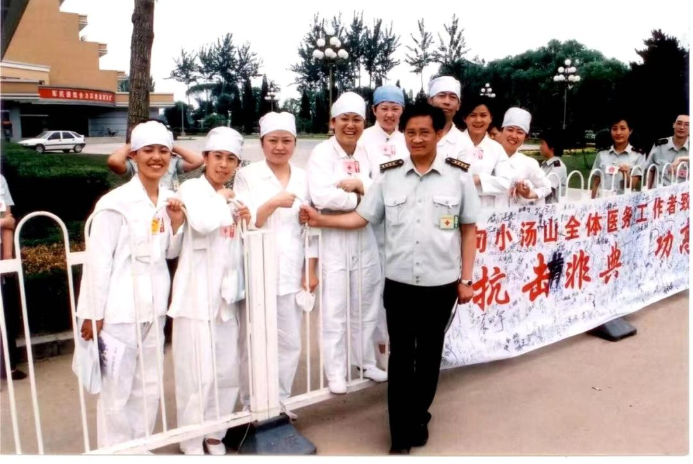
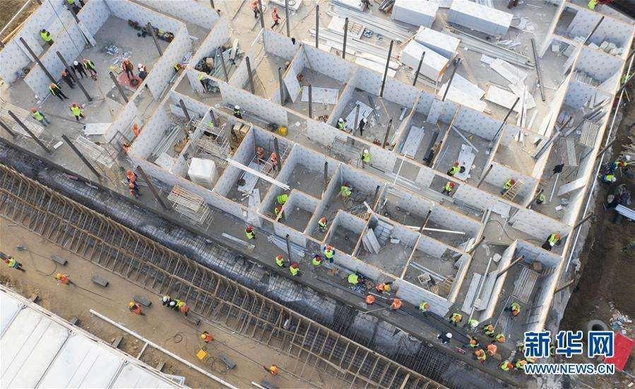
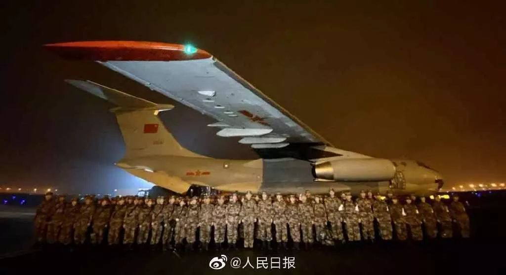
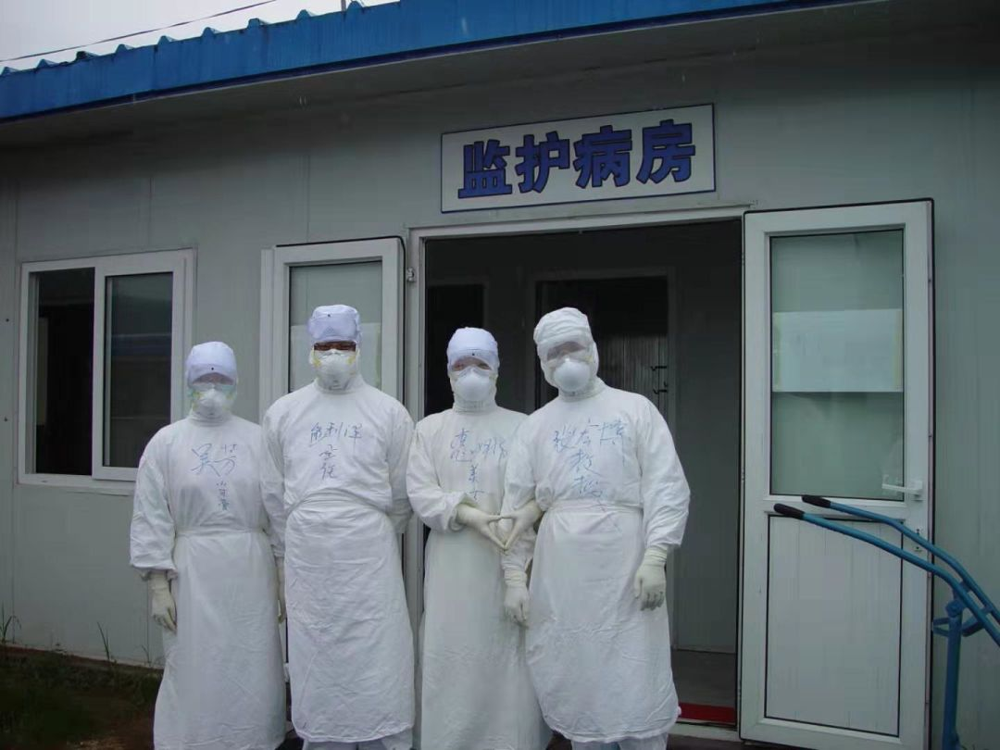

武汉紧急建设“小汤山医院”，当年如何做到SARS治愈率99%、1383名医护零感染？
原文链接 备份链接 武汉正在该市蔡甸区职工疗养院，紧急设计建设一个有1000个床位的临时医院，用于集中收治新型冠状病毒肺炎患者。临时医院计划在2月3日前投入使用。 这是学“小汤山模式”。2003年，北京7天建成小汤山医院，接收680名 …

编者按：
8天时间，一座可容纳1000张床位的医院正式落成。这就是参照2003年非典期间北京小汤山医院所建的火神山医院。明天，这所医院就将收治病人。
据悉，该医院主要救治确诊患者，开设重症监护病区、重症病区、普通病区，设置感染控制、检验、特诊、放射诊断等辅助科室。
《新民周刊》专访了麻醉专家熊利泽。2003年，麻醉专家熊利泽临危受命，担任第四军医大学赴京医疗队队长带领医疗队支援北京小汤山医院，任小汤山医院重症监护室主任。7天时间平地而起的小汤山非典医院收治了全国七分之一的患者，最终患者治愈率99%，1383名医护人员零感染，被世卫组织称为“奇迹”。
文 | 黄 祺
熊利泽，现任上海市第四人民医院院长

临时医院将很大程度缓解武汉救治压力
新民周刊：武汉火神山医院、雷神山医院很快就要投入运转，非典时期您在小汤山医院担任要职，从您的经验看，目前两个临时医院建成后，将在多大程度上缓解救治压力？
熊利泽：武汉很快就决定建设两个临时医院，被称为武汉的“小汤山医院”，说明政府决心很大。我的老领导、小汤山医院当时的院长张雁灵现在也在现场指导建设工作。

2003年非典时期担任北京小汤山医院院长的张雁灵 图 | 熊利泽提供
我没办法给个确切的数字来预测这两所医院能多大程度缓解救治压力，但根据非典时期的经验，我可以说将很大程度缓解压力。
这个结论可以从几个方面理解：
首先，据我了解武汉很多医院目前压力非常大，患者太多，存在院内交叉感染的风险。如果这些患者收治到临时医院，将很大程度上缓解现有医院的压力，否则医院里一直有交叉感染的话，患者人数会不断增加。
第二，临时医院能够有一个示范效应。我们从公布的数据可以看出，目前武汉新冠患者出院病人不多。临时医院由军队派出的医疗队接管后，他们有检测能力，可以根据相关指南让一部分符合出院标准的治愈病人出院。这样，病人流转起来，宝贵的医疗资源就能用到最重的病人身上，医院能收治更多需要治疗的病人。
临时医院启用后更重要的作用是减少社会恐慌情绪。根据小汤山医院的经验，临时医院启用后治愈率会提高，死亡率减少，那么公众的恐慌就会缓解。

武汉火神山医院建设过程备受关注
所以至少从我个人判断，我对这两家临时医院寄予厚望。
如果光从床位数看，你可能觉得2000多张床位不是很快就住满吗？其实不是这样的。就像打仗，有的特种部队人数不多，但起到的作用很大。
新民周刊：两个临时医院将由军医系统接手，我们军队医疗力量在这样的疫情中，有哪些优势？

空军军医大学（西安），陆军军医大学（重庆），海军军医大学（上海），以及三所军医大附属医院抽调医护力量支援武汉
熊利泽：军队的医疗力量，首先是执行力非常强，医护人员会按照要求和标准来防护、治疗。他们平常就有备战的训练，所以磨合的时间会比较短，可以迅速地投入救治。
而且军队医疗系统本身在灾难医学上，在成体系的救援上具有丰富的经验，传染病这样的公共卫生事件中，比如非典、非洲埃博拉疫情的支援上，军队医疗系统培训了很多专业人才。
军队医疗系统还有一个特点，一旦出动，架构会很完整。比如他们会带自己的检测人员、检测设备，弥补目前武汉救治能力的不足。
小汤山经验：医护人员个人防护放在第一位
新民周刊：小汤山医院“高治愈率、低死亡率”，医护人员没有感染的情况。请您介绍一下当时最重要的经验是什么？
熊利泽：小汤山医院最重要的经验，就是感控做得非常好。一个副院长带队，成立了20多人组成的督导团队，专门管医护人员的个人防护，对医院交叉感染的风险进行管控。

图 | 熊利泽提供
在小汤山医院正式运转前，我们所有人员做了充分的培训，并不是说医院一建好就马上开始收治病人。我记得有几天时间，我们做了很多培训，培训怎么做防护，要求医护人员绝对不能感染，如果医护人员感染那是非常危险的。
当时小汤山医院把医护人员的个人防护放到了最重要的位置。比如说我们尽量减少开会，如果开会不允许在室内开会。我记得北京市政府给大家配备了“小灵通”，那时候“小灵通”信号不怎么好。我们有个顺口溜：“站在风雨中，手持小灵通，昂着头挺着胸，就是打不通。”现在通信手段好多了，可以利用这些工具开会。另外那时候后勤保障做得很好。

图 | 熊利泽提供
另外，我们成立了一个专家组，我也是专家组的成员。如果出现疑难病例，都是专家组会诊解决的，这对于提高治愈率起到了关键的作用。
新民周刊：临时医院条件毕竟不能像正式的医院一样完备，您对武汉两座临时医院未来的运转，有些什么提醒？
熊利泽：尽管现在的临时医院肯定比17年前硬件条件好很多，但跟正规医院还是不能比。比如保温不知道是不是做得好，因为武汉现在气温还是比较低。
还有一个问题，不知道医护人员宿舍这次放在什么地方。北京小汤山医院建设时，考虑到传染风险，工作人员住宿的地方离医院比较远，上班必须靠车。现在我们对病毒的传播能力有了比较多的了解，我们知道宿舍和医院其实没有必要距离那么远。
17年过去，疫情控制能力肯定提高了
新民周刊：非典过去17年，您认为这次新冠疫情的控制，哪些方面是有进步的？哪些还需加强？
熊利泽：17年的时间，科学对疾病的认识已经有了很大的进步，对于这次新冠疫情的控制，我们更有信心。
我们医疗队当时出发去小汤山医院的时候，坐上车大家都在哭。为什么呢？因为非典中死亡的病人中三分之一是医护人员，大家听到的消息都是医护人员在牺牲。那时对病毒完全不了解，疫情到底能不能被控制住，大家没底，大家都想，去小汤山一年能回来吗？但这一次，我们已经可以认识到疫情是可以控制住的，我们讨论时间的时候是用“月”做单位，这就是最大的进步。
从治疗上，因为没有特效药，当时给非典病人用了大量的激素，后来导致了严重的后遗症。但这一次的治疗，我们从一开始就没有大量用激素。我们的医疗条件17年进步很大，治疗手段比当初好很多，尽管大家对这次疫情控制有批评，但我们也要看到这些进步的地方。
建议迅速关闭能力不足的发热门诊
新民周刊：这次疫情与非典相比有什么特别不一样的地方？您对目前的防控措施有没有什么建议？
熊利泽：这次新冠肺炎的特点是潜伏期长，赶上春节假期，大家都出发到各地去了。早期这些人员的流动，造成全国都有了病人，大家非常紧张。非典疫情虽然也波及全国，但主要还是在几个重点区域疫情比较严重。
防控的建议，我认为应该有更多的流行病学专家参与到政府决策中。现在我们打的是“人民战争”，这是我们国家的优势，这是值得赞赏的。但我们也要依靠科学的策略，这个就要依靠专业人员，需要流行病学专家出谋划策。
另外我要呼吁防控中不要歧视病人，更不能歧视疾病高发地区的人。如果我们把他们当做“敌人”，他们都躲起来了，或者生病了不去医院，这可能会造成更多人的感染。应该有一个宽松的环境，让他们站出来，及时接受治疗。

同济医院发热门诊内，“全副武装”的医护人员及戴着口罩的患者 图 | 新京报记者向凯
我还有一个建议，在后期的防控中，优质的医疗资源要发挥最主要的作用。综合性大医院有正规的传染科，有一批呼吸科、传染科人才。但一些区级、县级的医疗机构，能力不够，防护的物资可能也不够，让他们来应对传染病，增加了误诊和院内感染的风险。
我们要把英雄主义与科学精神结合起来。一开始病人多，必须要这么多医疗机构来应对，但将来病人逐渐减少，就应该尽快地关闭没有能力的发热门诊，以免造成新的问题。
武汉一线的救治，需要尽快从无序状态转变到有序状态，必须要有序管理、有序运转。新冠肺炎疫情毕竟是一个长期的消耗战，不是一天两天能够胜利的。一开始可能是无序混乱的，但这个阶段越短越好。
新民周刊：您是湖北人，疫情发生后，是不是特别关注疫情发展？参与了哪些工作？
熊利泽：我从一开始就关注这次新冠疫情，早期的信息显示情况还是可以的，尤其武汉医疗资源很丰富，我相信能控制得很好。疫情扩散以后，按照上级部署，我作为院长组织上海市第四人民医院为应对疫情做了人力、物资、场地的准备。
大年三十，我们提前把急诊二楼全部腾空，作为新冠肺炎疑似肺炎的隔离病房。以前发热门诊没有专门的CT，我们紧急采购了一台CT，专门用于发热病人的检查，这样就把交叉感染的可能性降低。这台机器是联影提供的，可以自动调节患者体位，我们工作人员也不需要与患者接触。
上海市第四人民医院是上海发热门诊定点医院，我们按照最高的标准来准备，原来整个二楼病房可以收治60多个病人，现在按照传染病标准，可以收治6人。

1月23号，医院就发出了组建援鄂医疗队的号召，医护人员踊跃报名，很快就组建了15人的队伍。现在15人参加到第二批上海援鄂医疗队，已经进驻武汉第三医院工作。据我所知，第二批医疗队中，上海市第四人民医院是派出医疗人员最多的单个医疗机构。
我的专业是麻醉，有很多学生在湖北一线参与救治新冠肺炎病人。这些天我一直在把这些年的经验分享给一线的这些医生们。前几天我写了一篇文章：《抗击新型冠状病毒感染肺炎疫情：给麻醉科医护工作者的几点建议》，我建议大家在救治新冠肺炎病人，做插管操作的时候，要用药物松弛患者肌肉，减少气管插管时患者喷射分泌物的出现，降低医护人员感染的风险。
征集令
《新民周刊》现面向全国征集新冠肺炎采访对象和真实故事：
如果你是参与抗击新冠肺炎疫情的医护人员或其家属，我们希望聆听你的“战疫”故事，也希望传达你的诉求。
如果你是确诊、疑似患者本人或家属，我们希望了解你和家人如何“抗疫”的过程，让外界了解你的真实经历。
如果你是疫情严重地区的普通市民，我们希望展现你的乐观，并倾听你所需的帮助。
如果你是公共服务人员或各类捐助者，我们希望看到你的“最美逆行”，记录下你的无私。
……
抗击新冠肺炎疫情，我们诚征对疫情了解的社会各界人士，提供相关线索，说出你的故事，让我们用新闻留存这一切。
《新民周刊》新冠肺炎线索征集值班编辑联系方式（添加时请简要自我介绍）：
周一：应 琛 微信号：paulineying0127
周二：金 姬 微信号：gepetta
周三：黄 祺 微信号：wxid_bf5mudid7oz322
周四：周 洁 微信号：asyouasyou
周五：孔冰欣 微信号：kbx875055141
周六：吴 雪 微信号：shyshine1105
周日：姜浩峰 微信号：jianggeladandong
新闻是历史的底稿，你们是历史的见证者。期待你的故事、你的线索！

▼
大家还都在看这些
▼
转载请在评论区留言，获得授权！
转载时，须注明作者、出处和微信号


文章已于修改
原文链接 备份链接 武汉正在该市蔡甸区职工疗养院，紧急设计建设一个有1000个床位的临时医院，用于集中收治新型冠状病毒肺炎患者。临时医院计划在2月3日前投入使用。 这是学“小汤山模式”。2003年，北京7天建成小汤山医院，接收680名 …
原文链接 备份链接 3月21日。 封城第59天。这么长时间了！ 昨天那么大的太阳，今天突然就阴了。下午还下了点雨。这时节的春雨，对于院子里的树以及花，都还是很需要的。前两三天，武大樱花盛开，树下空荡无人，估计是记者拍了一些照片，同学群里便 …
原文链接 备份链接 封城时间终于进入了两位数，医疗资源紧张的情况依然不见显著改善。 昨天「财经」发的稿子内容触目惊心，以武汉的一家定点医院为例，120个发热病人，大约平均会有80人被诊断为肺部感染，其中又只有5人能够「幸运」的被收治住院， …
原文链接 备份链接 社区是预防和分诊的第一道防线。如今，在前所未有的疫情冲击之下，在巨大的困难面前，社区和社区工作者们被潮水般的求助人群不断冲击，已到了难堪其负的境地。 △ 武汉街头，吴靖摄 1月23日武汉封城后，武汉某社区居委会书记张 …
原文链接 备份链接 有多少疑似？ 326份CT检查报告单，除了60份不发热的其他病例，剩下的266份CT报告，136例显示“肺部感染，呈多发磨玻璃样高密度影”。1月22日，湖北省新华医院放射科医生李云华手颤抖着数完，沉默了许久。这些前一 …